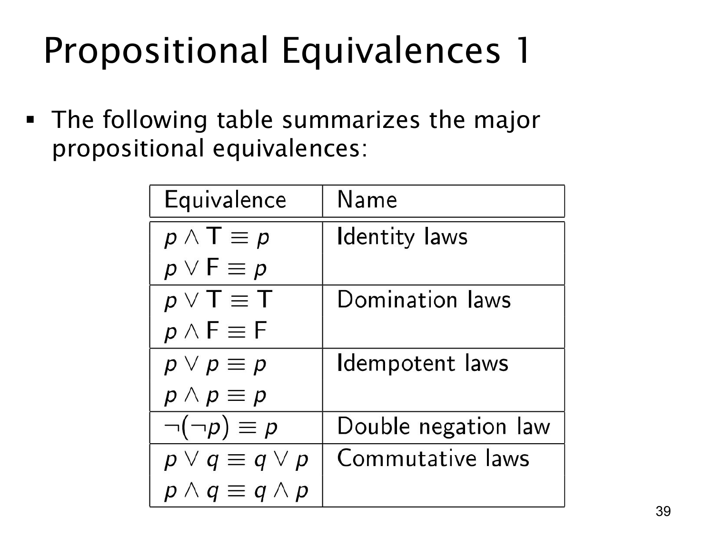

L1.1 · 第 39 页讲解原文
查看这一页课件

命题等价规律（一）：恒真、恒假与重复条件
课件把常用的逻辑等价列成表。T 表示恒真，F 表示恒假；≡ 表示左右两边在每一种赋值下都有相同真值。这些规律可以逐行用真值表验证，也可用于化简较长的命题式。
| 规律 | 课件中的等价式 | 为什么成立 |
|---|---|---|
| 同一律（identity laws） | p∧T≡p；p∨F≡p | “且真”或“或假”不改变 p。 |
| 支配律（domination laws） | p∨T≡T；p∧F≡F | “或真”必真，“且假”必假。 |
| 幂等律（idempotent laws） | p∨p≡p；p∧p≡p | 同一个条件重复一次不会增加新要求。 |
| 双重否定律（double negation law） | ¬(¬p)≡p | 真值翻转两次，回到原值。 |
| 交换律（commutative laws） | p∨q≡q∨p；p∧q≡q∧p | “或”“且”的两侧交换后，真值规则不变。 |
例如，p∧T∧p 可以先用同一律去掉 T，再用幂等律把 p∧p 化为 p。使用这些表格时要保留运算符本身：p∨T 和 p∧T 的结果不同；不能因为出现 T 就不看“或”还是“且”。